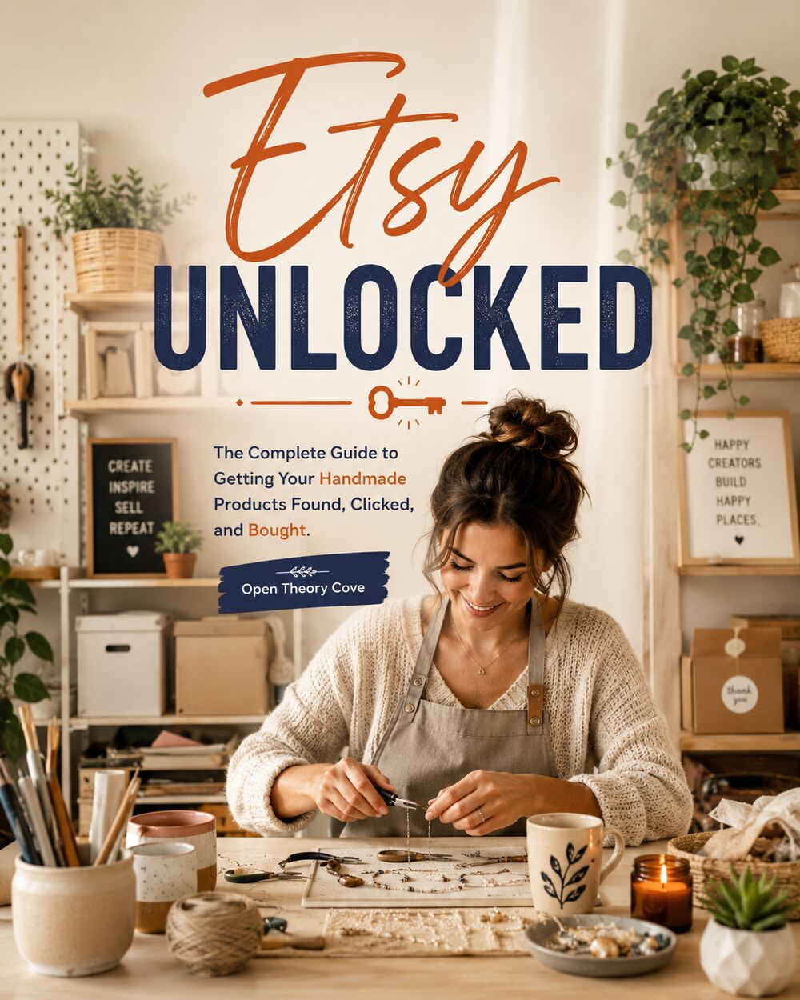

Open Theory Cove
Create. Restore. Inspire.
Books and creative resources for curious minds, open questions, and ideas worth putting into practice.
Explore the booksA place to pause, explore, and begin again
Open is an invitation to keep an open mind. Theory makes space for ideas and questions. Cove is the safe harbor where curiosity can become understanding and useful work.
Give promising ideas room to take shape.
Find space to reflect, learn, and reset.
Carry what you discover into everyday life.
Books from the Cove

If Something Happens To Me: This Is What You Need To Know
A guided workbook for organizing the information the people you trust may need if you are suddenly unavailable.
Explore the book
If I Am Eaten By A Gator: This Is What You Need To Know
A practical—and slightly funny—workbook for the important details your loved ones may need if life gets unexpectedly interesting.
Explore the book
Etsy Unlocked: From Side Hustle to Serious Income
A working guide to understanding a quiet Etsy shop, improving listings, developing free traffic, and making informed decisions about advertising. Available in Kindle, paperback, and PDF editions.
Explore Etsy UnlockedGet your Etsy shop seen
A practical guide to using shop data, clear titles, useful photos, and a manageable source of traffic to improve one Etsy listing at a time.
Read the Etsy visibility guide Browse the blog